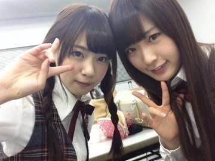
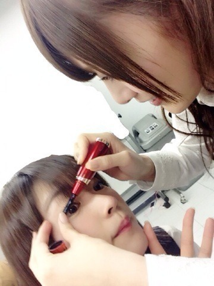

2014/0408Tue（´-`）.｡oO(かずみ ん×277
ばけらった！
いつも応援ありがとぉ♡
京都での握手会
すごく楽しかったです〜(*´ω`*)
私は沢山の人に支えられてる。
そう改めて感じました。
来てくださったみなさん、
ありがとうございましたっ！
個別で着たチャイナの写真、
載せるアルよ！
せっかく青のチャイナだったので
メイクさんが
ストリートファイターの
チュンリーにしようっと
言ってくれてお団子に
しちゃいましたっ(´∀｀∩
最後に
こんな髪型もしてみたり
いかがだったかしら> <？
---------
コメントでも沢山の方が
書いてくださりましたが
乃木どこ！エイプリルフール！
なぁちゃんに見事に
やられました〜((((/*0*)/
でも、嘘ついた後からずっと
悩んでいたので、
逆ドッキリだと聞いて
安心したよ〜(ﾉ;ω;)ﾉ
よかったぁあ(⌒▽⌒)

ん〜たかやまる！
ななせまる！！
昨日まいやんにホットビューラー
やってもらったまる！

わたし変なかお〜笑
----------
渋谷に買い物へ行ったら
なんと気づいたら片想いが
ずっとかかってました(*ﾟﾛﾟ)!!
いや〜
嬉しいねぇ（´-`）.｡oO
あと街中で高山だと
気づいて声をかけてくださる方
ありがとうございます！
乃木坂のこと知っててくれる人が
どんどん増えて、ありがたや！！
今週はMステもあるしっ
頑張るぞー(｀･ω･´)b
それでは、
この辺で〜(^o^)/
2014/04/08 22:12
コメント(769)
チャイナ服にあってるよ！
すごく綺麗♪
かずみんおもしろくてきれい
可愛い！
ずーさーん！
\(.ﾟДﾟ)/アメイジング
かずみさーん
かずみーーー
いつも元気もらってるよ
ありがとう
いつも元気もらってるよ
ありがとう
イクシャンきてぁヾ(＠⌒ー⌒＠)ノ
みんな可愛さヾ(＠⌒ー⌒＠)ノ
みんな可愛さヾ(＠⌒ー⌒＠)ノ
なぁちゃんすごかったー！
けどかずみんの気使うところ
優しいくて良いーって思ったよ
けどかずみんの気使うところ
優しいくて良いーって思ったよ
一実ん、お疲れ様。
やぁきゃずみ( ´ ▽ ` )ﾉ
覚えてる？笑
やあ、きゃずみ( ´ ▽ ` )ﾉ
マイブーム来てるわ*･゜ﾟ･*:.｡..｡.:*･'(*ﾟ▽ﾟ*)'･*:.｡. .｡.:*･゜ﾟ･*
てことで
また幕張で(・ω・)ノ
ではでは(^-^)/
かずみーん＼(^o^)／
こんばんわ、かずみん♪
今、一個前のBlogにコメしてて、そろそろかずみんの
Blog更新時期かなぁ～って、書いて投稿したら案の定。。。
我ながらスゲータイミングじゃ！
まさに、アメイジング＼(＾o＾)／
実はこのBlog読んでなくて、Blog更新したらいきなり
かずみん出てきたから勢いで書いてます。
またちゃんと読んでからコメするね!(^^)!
では。
今、一個前のBlogにコメしてて、そろそろかずみんの
Blog更新時期かなぁ～って、書いて投稿したら案の定。。。
我ながらスゲータイミングじゃ！
まさに、アメイジング＼(＾o＾)／
実はこのBlog読んでなくて、Blog更新したらいきなり
かずみん出てきたから勢いで書いてます。
またちゃんと読んでからコメするね!(^^)!
では。
ボーリング行ったら指に血豆できたんやけど
どうやったら治るかな？
知ってたら教えて下さい。
どうやったら治るかな？
知ってたら教えて下さい。
Mステおめでとう*･゜ﾟ･*:.｡..｡.:*･'(*ﾟ▽ﾟ*)'･*:.｡. .｡.:*･゜ﾟ･*ございます。
絶対みます！録画したいけど…録画機壊れてる泣
あと、今週末、来週末の握手会行きます！
では、
絶対みます！録画したいけど…録画機壊れてる泣
あと、今週末、来週末の握手会行きます！
では、
なーちゃん逆ドッキリでこっちもよかったー笑
かずみんなごやでまってるよー(*ﾟ∀ﾟ*)
バケラッター！！
握手会お疲れ〜(^_^)
チャイナドレス見たいよ〜T_T
またどこかで着てくれ〜m(_ _)m！！
握手会お疲れ〜(^_^)
チャイナドレス見たいよ〜T_T
またどこかで着てくれ〜m(_ _)m！！
かずみん♪ ナイスばでーですね
逆ドッキリしかけられた後の
かずみんのなぁーちゃんへのフォーローが
とっても可愛かったです
逆ドッキリされても
ポジピース
かずみんのなぁーちゃんへのフォーローが
とっても可愛かったです
逆ドッキリされても
ポジピース
こんばんバケラッタ♪♪♪
かずみん
セクシーやん
やっぱり
かずみん最高！
セクシーやん
やっぱり
かずみん最高！
かずみんチャイナドレス
似合ってるよ(*´ー｀*)
似合ってるよ(*´ー｀*)
バケラッタ.｡ﾟ+.(･∀･)ﾟ+.ﾟ
ズーリンだ♡
青のチャイナドレスめっちゃセクシー笑
似合ってて可愛い！
なぁちゃんのはほんとにびっくりした〜(°_°)
かずみんと同じで
放送してもいいのか！？
と思ったけどドッキリで良かったよ♪笑
まいやん先生！
ではではおやすみなさい☆彡
ズーリンだ♡
青のチャイナドレスめっちゃセクシー笑
似合ってて可愛い！
なぁちゃんのはほんとにびっくりした〜(°_°)
かずみんと同じで
放送してもいいのか！？
と思ったけどドッキリで良かったよ♪笑
まいやん先生！
ではではおやすみなさい☆彡
バケラッタ！
かずみんお疲れ様～
かずみんお疲れ様～
チャイナドレス姿 美しい
かずみーん！
チャイナ可愛すぎます(∩∀｀*)笑
もうすぐ全握だから楽しみ〜
チャイナ可愛すぎます(∩∀｀*)笑
もうすぐ全握だから楽しみ〜
かずみん！俺だ！くりすますくんだ！
前回2ヶ月ぶりにコメントしたのに弾かれた(⌒▽⌒)ww
京都行きたかったなぁ(⌒-⌒; )チャイナ着るんだもんなぁ(⌒-⌒; )みたかったな(⌒-⌒; )美脚拝みたかったなぁ(⌒-⌒; )ねーねーもう1回やろうよ(⌒-⌒; )←
乃木どこエイプリルフールの時はワラッタw
一実さんの人のよさがでたよ！
13日会いに行きます。懺悔します←
前回2ヶ月ぶりにコメントしたのに弾かれた(⌒▽⌒)ww
京都行きたかったなぁ(⌒-⌒; )チャイナ着るんだもんなぁ(⌒-⌒; )みたかったな(⌒-⌒; )美脚拝みたかったなぁ(⌒-⌒; )ねーねーもう1回やろうよ(⌒-⌒; )←
乃木どこエイプリルフールの時はワラッタw
一実さんの人のよさがでたよ！
13日会いに行きます。懺悔します←
チャイナ服似合ってる！
かわいい♡
かわいい♡
ヤッシーです(^-^)v
2日間の握手会､お疲れ様でした(^^ゞ
忙しいと思うから体には気をつけて下さいね
チャイナドレス姿見たかったー
へばっまずな(^-^)/~~
2日間の握手会､お疲れ様でした(^^ゞ
忙しいと思うから体には気をつけて下さいね
チャイナドレス姿見たかったー
へばっまずな(^-^)/~~
乃木どことnogibingo!、
YouTubeで全部見たよ！
まだファン歴3日目ですが。笑
かずみんめっちゃおもろいから
これからももっと笑わせてね！
YouTubeで全部見たよ！
まだファン歴3日目ですが。笑
かずみんめっちゃおもろいから
これからももっと笑わせてね！
こんばんは、かずみん。
京都２日間お疲れ様でした！
個握でかずみんレーンに行き楽しかったです！
チャイナドレスとっても似合っていました！
大人の色気でしょうか？
それでは、Mステ楽しみにしています！
京都２日間お疲れ様でした！
個握でかずみんレーンに行き楽しかったです！
チャイナドレスとっても似合っていました！
大人の色気でしょうか？
それでは、Mステ楽しみにしています！
チャイナドレス可愛いー♡
二つお団子も可愛いし、二つお団子の下の毛ちょろちょろした髪の毛も可愛いー♡
やっぱ水色はかずみんカラーだね！
Mステ楽しみー！
もちろん観るよー！ちゃんと録画の設定もしたからリピートする♡笑
かずみん大好き♡
二つお団子も可愛いし、二つお団子の下の毛ちょろちょろした髪の毛も可愛いー♡
やっぱ水色はかずみんカラーだね！
Mステ楽しみー！
もちろん観るよー！ちゃんと録画の設定もしたからリピートする♡笑
かずみん大好き♡
いや～乃木どこの逆ドッキリは俺もびっくりした。
え、テレビで言っちゃっていいの??みたいなヒヤヒヤ感。
でもその後のかずみんの同様の仕方が面白くってｗｗ
え、テレビで言っちゃっていいの??みたいなヒヤヒヤ感。
でもその後のかずみんの同様の仕方が面白くってｗｗ
ベーちゃんです！！
最近街中で気づいたら片想いが流れてるのを耳にしますよ！
改めていい曲だと実感しました^ ^
夢だった？mステに出られてよかった！！
久々にmステ見るしかー(^O^)／
やはりかずみんの足キレイすぎです(^^;;
ってことでまた〜
アメイジング＼(^o^)／
最近街中で気づいたら片想いが流れてるのを耳にしますよ！
改めていい曲だと実感しました^ ^
夢だった？mステに出られてよかった！！
久々にmステ見るしかー(^O^)／
やはりかずみんの足キレイすぎです(^^;;
ってことでまた〜
アメイジング＼(^o^)／
かずみん(´｡･-･｡｀)
初コメです(´｡･ч･｡｀)
握手会お疲れ様でした(´｡･･｡｀)♡
エイプリルフールのやつには私にもなぁちゃんに騙されちゃいました(´･ ･｀)
本当嘘でよかったです(´｡･･｡｀)♡
これからもかずみんは騙されないように気をつけてくださいね(´｡･･｡｀)♡
応援してます
初コメです(´｡･ч･｡｀)
握手会お疲れ様でした(´｡･･｡｀)♡
エイプリルフールのやつには私にもなぁちゃんに騙されちゃいました(´･ ･｀)
本当嘘でよかったです(´｡･･｡｀)♡
これからもかずみんは騙されないように気をつけてくださいね(´｡･･｡｀)♡
応援してます
こんばんバケラッタ♪♪♪
かずみん
握手会お疲れ様！！！！
チャイナドレスかわいいよ
乃木どこ見たよ
逆ドッキリでよかったよねほんと
Mステ楽しみ
かずみんお疲れ様です！
かずみんのチャイナ服着てる姿見たかったー(>_<)
またどこかの握手会でもやって下さい！！！
Mステ絶対見るから頑張ってね！！テレビの前から応援してます！！
今日はこの辺で(o^^o)
かずみんのチャイナ服着てる姿見たかったー(>_<)
またどこかの握手会でもやって下さい！！！
Mステ絶対見るから頑張ってね！！テレビの前から応援してます！！
今日はこの辺で(o^^o)
やっぱりストリートファイター意識してたんだ(笑
でも、かずみんはすぐに負けちゃいそー(*^_^*)
でも、かずみんはすぐに負けちゃいそー(*^_^*)
かずみーーーーーーん！！！
ばけらった！！！！
握手会おつかれ！！！
個別行けなくてゴメンね・・・
チャイナドレス見たかったな・・・
メッチャ似合ってるね！！！！
さすがかずみん！！！
そして乃木どこ！！！
逆ドッキリねｗｗｗ
かすみんの人の良さが見れてよかった！！！
かずみんを推してて正解だったと思えたよ！！！
ではでは
hayato・たまご・スマイルマンでした♪
ばけらった！！！！
握手会おつかれ！！！
個別行けなくてゴメンね・・・
チャイナドレス見たかったな・・・
メッチャ似合ってるね！！！！
さすがかずみん！！！
そして乃木どこ！！！
逆ドッキリねｗｗｗ
かすみんの人の良さが見れてよかった！！！
かずみんを推してて正解だったと思えたよ！！！
ではでは
hayato・たまご・スマイルマンでした♪
ずーりん可愛過ぎ！！
パシフィコでもやって下さいな(*_*)
俺も乃木どこのなぁちゃんに騙された 笑
でもかずみんの人の良さが出てたよ！^ ^
握手行くからよろしくー
ぎーさん
パシフィコでもやって下さいな(*_*)
俺も乃木どこのなぁちゃんに騙された 笑
でもかずみんの人の良さが出てたよ！^ ^
握手行くからよろしくー
ぎーさん
ズーリンセクシー
ブログ待ってました〜！
全握でかずみんに推しタオル首にかけてるのに他のレーン行くの何で〜？って言われたときすごくドキドキしたよ〜笑
京都は全握しか行けへんだけど名古屋は両方とも行きます！
かずみんの生チャイナドレスめっちゃ見たかった…((((；ﾟДﾟ)))))))
乃木どこの逆ドッキリのリアクションも最高やったで！
また次のブログ待ってます！
全握でかずみんに推しタオル首にかけてるのに他のレーン行くの何で〜？って言われたときすごくドキドキしたよ〜笑
京都は全握しか行けへんだけど名古屋は両方とも行きます！
かずみんの生チャイナドレスめっちゃ見たかった…((((；ﾟДﾟ)))))))
乃木どこの逆ドッキリのリアクションも最高やったで！
また次のブログ待ってます！
かずみん、鬼可愛い!!
今週の乃木どこのかずみんかわ面白かった！！！
あれはうちも騙されたよヾ(＠⌒ー⌒＠)ノ笑
チャイナ服可愛い(≧∇≦)b
セクシー高山さんですね！
高山さん、チュンリー知ってたんだ(笑)
STREET FIGHTERやったことあるんですか？
誰使うんだろ(笑)
乃木どこ、見ましたよー
視聴者側でも本当に焦りましたil||li (OдO`) il||li
ワイプで抜かれてるときの顔も、不安そうでしたね！
高山さんの性格の良さがでてましたよね！
相手を思いやる心って大事なんですよねー！
そして、Mステ出演本当におめでとうヾ(＾v＾)k乃木坂が有名になって、本当によかった！
タモリさんとの、絡み期待してます(笑)
ではまた！
握手会お疲れ様
セクシー高山さんですね！
高山さん、チュンリー知ってたんだ(笑)
STREET FIGHTERやったことあるんですか？
誰使うんだろ(笑)
乃木どこ、見ましたよー
視聴者側でも本当に焦りましたil||li (OдO`) il||li
ワイプで抜かれてるときの顔も、不安そうでしたね！
高山さんの性格の良さがでてましたよね！
相手を思いやる心って大事なんですよねー！
そして、Mステ出演本当におめでとうヾ(＾v＾)k乃木坂が有名になって、本当によかった！
タモリさんとの、絡み期待してます(笑)
ではまた！
握手会お疲れ様
じゃあ、俺も一実さんのこと見かけたら声を掛けさせてもらいますね(笑)乃木坂古株の俺自身も知名度とかupしてくれると嬉しく思う(^_^)v じゃあ、今日はこの辺で。お休み。
かずみん♪
こんばんバケラッタ(≧∀≦)
握手会では、胸元のバラが目印！
名古屋の「すかたん＠重陽の節句」です。
京都での全国握手会＆個別握手会♪
お疲れ様（＾◇＾）ノ
自分も今回は少しだけど
かずみんの所に握手に行けて嬉しかったよ(*^^*ゞ
個握でのチャイナドレス♪
とっても似合っていて素敵だったね(*^^*ゞ
お団子も可愛かったよ(≧∀≦)
乃木どこはまだ観れていないので(・_・、
感想はまた今度ね(*´･ω･)ﾉｼ
かずみんが今日も明日も
楽しい一日を笑顔で過ごせますように♪
それでは、今回はこの辺で♪
ポジピース♪(`･ω´･ ●)Ｖ
こんばんバケラッタ(≧∀≦)
握手会では、胸元のバラが目印！
名古屋の「すかたん＠重陽の節句」です。
京都での全国握手会＆個別握手会♪
お疲れ様（＾◇＾）ノ
自分も今回は少しだけど
かずみんの所に握手に行けて嬉しかったよ(*^^*ゞ
個握でのチャイナドレス♪
とっても似合っていて素敵だったね(*^^*ゞ
お団子も可愛かったよ(≧∀≦)
乃木どこはまだ観れていないので(・_・、
感想はまた今度ね(*´･ω･)ﾉｼ
かずみんが今日も明日も
楽しい一日を笑顔で過ごせますように♪
それでは、今回はこの辺で♪
ポジピース♪(`･ω´･ ●)Ｖ
一実へ
りきとです。
全握行きますのでよろしく
りきとです。
全握行きますのでよろしく


かずみん！チャイナめっちゃ可愛いです（；＿；）♡